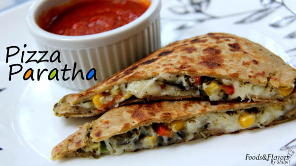

INGREDIENTS:
- Whole wheat flour
- Grated mozzarella cheese(1 1/4 cups)
- Chopped bell peppers(1/2 cup)
- Chopped onions(1/2 cup)
- Corn kernels(1/4 cup)
- Chopped olives(8-10)
- Italian seasoning
- Chilli flakes(Optional)
- Pizza sauce
- Pesto sauce
- Cooking oil
- Salt
- Water
RECIPE:
- Take the flour and add salt and water.And then make dough.
- Keep the dough aside.
- Take the cheese and add the bell peppers, onions, corn, olives and chilli flakes.
- Take the dough and roll it into 2 round.
- Put the pizza sauce, pesto sauce and italian seasoning on the dough. Now keep the stuffing on it.
- Close the dough with the other piece of dough and pressed the corners.
- Now shallow fry the stuffed dough, till light brown.
- Cut the stuffed one to make it cheesy.
- At last yummy pizza paratha is ready to eat.
- Serve your guests with yummy sauce.